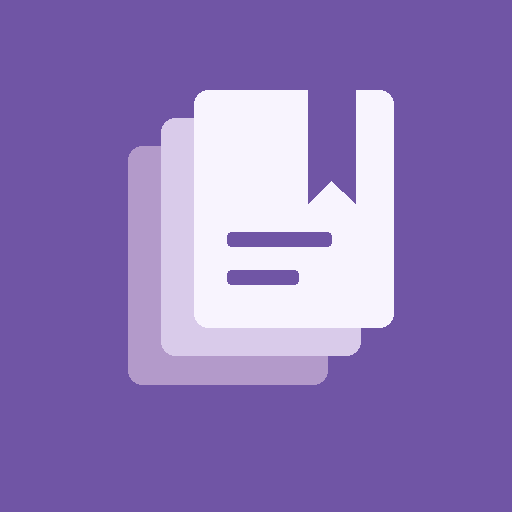
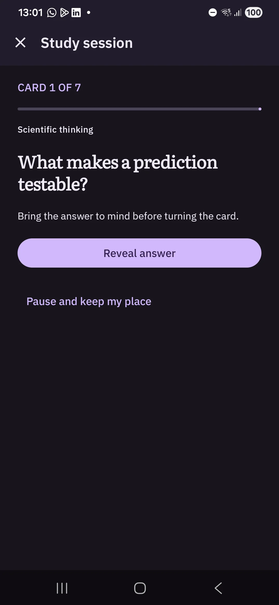
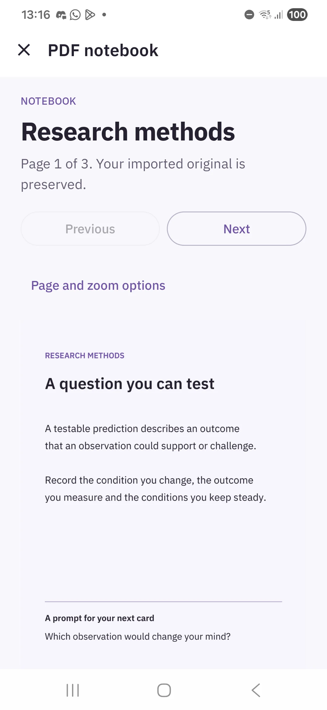

No account to maintain.
Cards and imported originals stay on your device. No cloud service or subscription is needed to study.

PageRecallYOUR STUDY LIBRARY FOR ANDROID
Write meaningful questions. Keep their sources close. Return to them with spaced repetition.
Explore free and lifetime
Link a card to a PDF page or a selected answer region. Return to the original when you need the context.

Your imported PDF stays intact. Page links and answer images keep the connection between a question and the material behind it.
Image occlusion and batch regions add another way to study with the lifetime unlock. You choose the regions and write the questions.
See how source-linked cards workReveal the answer, then choose Again, Hard, Good or Easy. See the next interval before you grade.
Pause without losing your place. Keep decks, study plans and progress together in a library that works offline.
Cards and imported originals stay on your device. No cloud service or subscription is needed to study.
Backup and restore are free. Archives carry your originals, cards, schedules and progress to another phone.
Archives are not encrypted. Ads, consent and Google Play purchases need connectivity. Study contents are not sent to advertising services.
The daily essentials are free. Add more creation tools with one purchase.
Free
Contextual banner ads in the library overview. Study sessions and editors are ad-free.
Buy once.
Planned launch price: US $4.99, UK £3.99, India ₹199. Google Play displays your local price before purchase.
Being prepared for Google Play. Download availability will appear here after approval.
No. You write the questions and answers. Batch creation turns selected PDF regions into answer images, paired with the questions you enter. Image occlusion hides selected labels. No AI or text recognition service receives your documents.
Export a complete ZIP backup in Settings, copy it somewhere safe, then restore it on the new phone. Android automatic backup is disabled. Restore a lifetime purchase separately through the Google account that bought it.
Existing cards, including image and PDF cards, remain accessible for basic study, editing and export. The unlock controls additional creation tools and custom-plan execution.
Yes. Import UTF-8 CSV or tab-separated text with question, answer and optional deck columns. Complete backups also preserve originals, source links and review history.
No. Scheduling supports a study routine. Review totals record activity, not mastery, and the app does not predict learning outcomes.